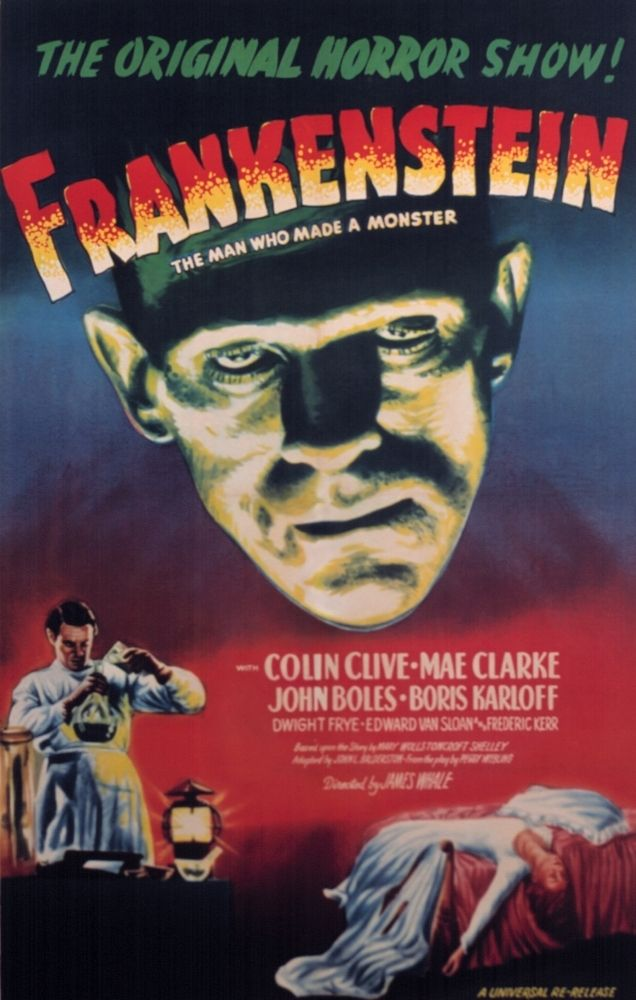

Science Fiction = Social Commentary
-Science fiction and its role as literature of protest and criticism-
“Science fiction is a great way to pretend you are writing about the future when in reality you are attacking the recent past and the present. You can criticize communists, racists, fascists or any other clear and present danger, and they can’t imagine you are writing about them.” ~ Ray Bradbury
Let me tell you a secret. In all the good science fiction it's never really about robots, never really about the future, never really about monsters and never really about aliens. It's about one thing:
HUMANTY
Using literature to convey a message is not an original idea unique to the science fiction genre, but the use of ideas such as clones, robots or aliens that are too foreign to us to feel personally attacked but similar enough to be able to make a comparison allows us to approach satire and criticism in a better way. Placing the story in the future provides the same benefits and can frame the story as a cautionary tale.
And there is no doubt that a very large number of science fiction writers understand this.
In what is considered to be one of the first works of science fiction "Frankenstein", Mary Shelley examines humanity through the ambitious scientist Frankenstein who plays God as Shelley's questioning of the effect of technological progress and reveals that Frankenstein's monster is not the real monster but the people.
And most of the writers followed suit, using their platform to criticize the direction that society is taking and warning us about where we can end up.
Examples (click on the images):
So on the part of the writers, criticism is necessary but every work has two sides.
Because themes of slavery, exploitation, class, and rights are present in so many of the works, science fiction fans who find themselves in the story and feel a connection with the themes use those stories as words of protest. Using terms and symbols from the stories to convey how the existing reality is not so far from the exaggerated reality that the story describes.

Take 'V for Vendetta' for example. In the graphic novels of Alan Moore and David Lloyd and in the film, a dystopian world without privacy and choice is told, and in the middle of it all is a rebel V. with an iconic mask. The story itself is a harsh critique but its real power comes from the fact that protestors from all over the world have adopted the mask and creative expressions to express themselves.
or the works of author Octavia E. Butler. Throughout her 12 novels and two short stories, Butler told about unique worlds and flawed humanity. In addition, as a black woman, she incorporated African motifs and characters in her stories in a unique and unusual way and added complex female characters that were missing from many other novels. Her stories served as a source of inspiration for many of the leaders of the black rights movement, feminists and science fiction fans alike.
This is the power of fiction. A story written by one person in his room can touch the millions of people who will connect with it and even help them in their lives and inspire them to write their own story